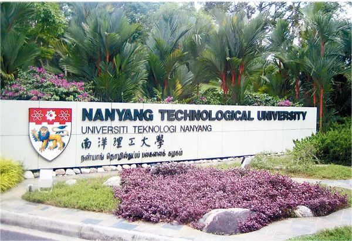
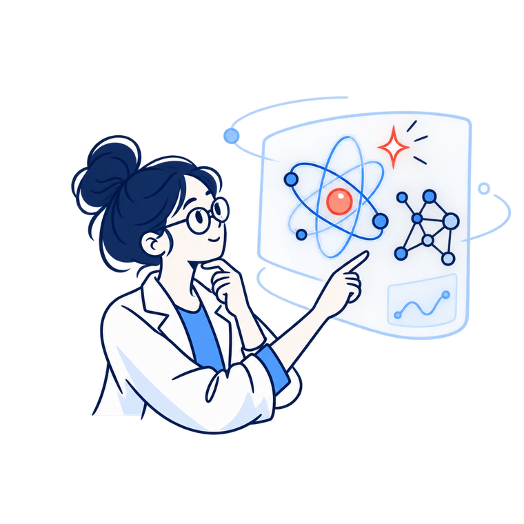

Ph.D.
Please email your CV, transcripts, and research interests.
Prospective Ph.D. students may explore these funding opportunities. Please check each programme's eligibility and application requirements:
School of Electrical and Electronic Engineering
NTU Singapore
Thank you for your interest in joining SPACE Lab. Due to the large volume of emails, we may not be able to respond to every message. Before reaching out, please read the information below.
How to applyWe are seeking multiple
 UOB
UOB

Four languagesInclude the materials listed for the position you are applying for.
Please email your CV, transcripts, and research interests.
Prospective Ph.D. students may explore these funding opportunities. Please check each programme's eligibility and application requirements:

Please email your CV, representative papers, and a research statement.
Researchers proposing to use AI for scientific discovery may also consider the NTU AI-for-X Postdoctoral Fellowship. Review NTU's eligibility, mentor, and application requirements before applying.
Please email your CV, transcripts, and research interests. In your message, briefly describe the research direction you hope to explore, relevant projects or skills you would bring, and your preferred start date. The minimum visit length is six months.
Emails that clearly describe your fit with the group and include the materials above are more likely to receive a timely response. If there is a good match, you can expect to hear back within two weeks.